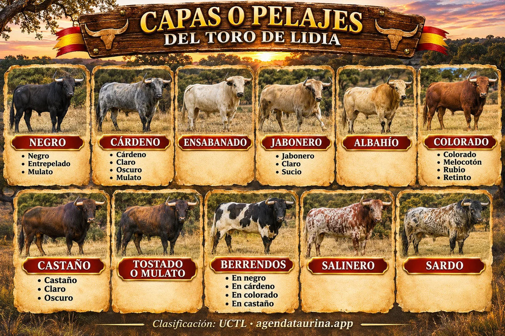

Agenda Taurina
Agenda TaurinaCapas o pelajes del toro de lidia: guía completa con la clasificación de la UCTL
Las 11 capas del toro bravo, sus variantes y cómo distinguirlas, más las particularidades que aparecen en los carteles

Ilustración de Agenda Taurina generada con IA · Clasificación: UCTL.
En los carteles de festejos se lee a menudo «negro entrepelado», «jabonero sucio» o «berrendo en colorado». No son palabras inventadas: son los términos con los que ganaderos y veterinarios describen a cada animal. Con esta guía aprenderás a reconocer las capas del toro bravo y a leer una reseña completa como un aficionado más.
Qué es la capa y por qué importa
La capa o pelaje es el color del pelo del toro. Es lo primero que se escribe en su reseña, antes que cualquier mancha o detalle, y junto al nombre, el número y el guarismo sirve para identificar a cada animal. Por eso aparece en los carteles de los toros cerriles, en las fichas de las ganaderías y en los libros genealógicos.
Conocer las capas también ayuda a disfrutar más de los festejos: muchos aficionados reconocen una ganadería solo por el color de sus toros, porque cada encaste tiende a dar unos pelajes concretos.
Las 11 capas según la UCTL
La Unión de Criadores de Toros de Lidia (UCTL) agrupa los pelajes del toro bravo en once capas principales, cada una con sus variantes.
1. Negro
Es la capa más común en el campo bravo. Tiene dos variantes reconocidas:
- Entrepelado: negro con pelos blancos sueltos repartidos por el cuerpo, como si tuviera canas.
- Mulato: negro apagado, con tonos pardos o rojizos, sobre todo en el lomo.
En los carteles también se ven zaíno (negro sin un solo pelo blanco) y azabache (negro brillante, con reflejo azulado).
2. Cárdeno
Color gris, que resulta de la mezcla de pelos blancos y negros. Según la proporción:
- Cárdeno claro: dominan los pelos blancos y el toro se ve gris plateado.
- Cárdeno oscuro: dominan los negros y el toro se ve casi negro.
- Cárdeno mulato: la mezcla tiene tonos pardos o rojizos.
3. Ensabanado
Toro completamente blanco, como una sábana. Es uno de los pelajes menos frecuentes y de los que más llaman la atención.
4. Jabonero
Blanco amarillento, del color del jabón casero. Tiene dos variantes:
- Jabonero claro: casi blanco, con un ligero tono crema.
- Jabonero sucio: más oscuro, con zonas tostadas, sobre todo en la cabeza y las patas.
5. Albahío
Blanco amarillento pálido, de color crema, más uniforme que el jabonero. A veces se le llama también barroso cuando tiene tonos terrosos.
6. Colorado
Pelo rojo. La UCTL distingue tres variantes:
- Melocotón: rojo muy claro, casi anaranjado.
- Rubio: colorado claro de tono dorado.
- Retinto: rojo oscuro, del color de la caoba.
En algunos carteles se usa también colorado encendido para un rojo muy vivo.
7. Castaño
Del color de la castaña, entre el rojo y el negro. Puede ser claro u oscuro.
8. Tostado o mulato
Castaño muy oscuro, casi negro, con reflejos rojizos que se ven sobre todo con el sol.
9. Berrendo
Fondo blanco con grandes manchas de otro color. Se nombra según el color de las manchas: berrendo en negro, en cárdeno, en colorado y en castaño son los más habituales, aunque también hay berrendos en jabonero, en salinero o en sardo.
10. Salinero
Mezcla de pelos colorados y blancos repartidos por todo el cuerpo, que dan al toro un aspecto rosado y jaspeado.
11. Sardo
Mezcla de pelos negros, colorados y blancos. Es una de las capas más vistosas y difíciles de describir, porque cada toro sardo es distinto.
Cómo no confundirlas
- Jabonero o albahío: el albahío es más pálido y uniforme, color crema; el jabonero tira más a amarillo y, si es sucio, tiene zonas tostadas.
- Castaño o tostado: el tostado es mucho más oscuro, casi negro, y solo se le ve el tono rojizo a la luz.
- Berrendo, salinero o sardo: si hay manchas grandes sobre fondo blanco, es berrendo; si los colores están mezclados pelo a pelo, es salinero (colorado y blanco) o sardo (negro, colorado y blanco).
- Cárdeno o negro entrepelado: el cárdeno se ve gris en todo el cuerpo; el entrepelado es negro con pelos blancos sueltos.
Las particularidades: manchas y dibujos
Después de la capa se añaden las particularidades, que son las manchas o marcas que tiene cada toro. Las tienes todas, con su infografía, en nuestra guía de particularidades del toro de lidia.
En el cuerpo
- Burraco: negro con muchas manchas blancas, como salpicaduras. El salpicado es parecido, sobre cualquier capa oscura.
- Estornino: negro con unas pocas manchitas blancas, pequeñas y redondas.
- Nevado: manchitas blancas, como copos de nieve.
- Chorreado: franjas verticales que bajan del lomo, más claras o más oscuras que la capa.
- Listón: una franja estrecha de otro color a lo largo del lomo.
- Girón (o jirón): una mancha blanca grande e irregular en el costado.
- Bragado: mancha blanca en el vientre.
- Aldiblanco: mancha blanca muy grande en toda la parte de abajo del cuerpo.
- Cinchado: una banda blanca que rodea el cuerpo, como la cincha de un caballo.
- Calcetero: la parte baja de una o varias patas en blanco. El botinero es al revés: animal claro con las patas oscuras.
- Lombardo: toro negro con la parte de arriba del lomo más clara, tirando a pardo.
- Meano: mancha o mechón blanco en la zona del prepucio.
En la cabeza
- Lucero: mancha blanca en la frente.
- Estrellado: mancha blanca pequeña e irregular en la frente.
- Careto: mancha blanca que ocupa la frente y la cara.
- Caribello: pelos blancos sueltos por la frente y la cara, sin llegar a formar mancha.
- Bociblanco / bocinegro: blanco o negro alrededor del morro.
- Ojinegro: mancha negra alrededor de los ojos.
- Ojo de perdiz: en toros colorados, un aro más claro alrededor de los ojos.
- Llorón: una mancha más clara bajo los ojos, como una lágrima.
- Capirote: cabeza y cuello de un color distinto al resto del cuerpo.
En la cola
- Coliblanco: la punta de la cola (el borlón) blanca.
- Rabicano: pelos blancos sueltos a lo largo de la cola.
Cómo se lee una reseña completa
Primero va la capa, después su variante y al final las particularidades. Algunos ejemplos:
- Negro entrepelado bragado: toro negro con pelos blancos sueltos y una mancha blanca en el vientre.
- Berrendo en colorado capirote: fondo blanco con manchas rojas y la cabeza y el cuello colorados.
- Cárdeno claro listón: gris plateado con una franja de otro color a lo largo del lomo.
- Negro mulato listón meano: negro apagado, con franja en el lomo y una mancha blanca en la zona del prepucio.
¿Te suenan raras otras palabras de los carteles, como entrà, cerril o guarismo? Mira nuestro glosario de los festejos populares.
Fuente: clasificación de capas de la Unión de Criadores de Toros de Lidia (UCTL) y definiciones de pelajes y particularidades de la Real Unión de Criadores de Toros de Lidia (RUCTL), explicadas por Agenda Taurina.
Ver el calendario completo Ver todas las noticias